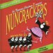
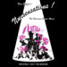

Music & Lyrics: DAN GOGGIN
| Portada Cover |
Versión Version |
Año Year |
Idioma Language |
Media | Elenco Cast |
Título de publicación Release Title |
Notas Notes |
|---|---|---|---|---|---|---|---|
 |
Original Off-Broadway Cast | 1986 | EN | 16 Tracks mp3 128kb/s |
Christine Anderson, Marilyn Farina, Semina De Laurentis, Edwina Lewis, Suzi Winson | ||
 |
Original London Cast | 1987 | EN | 19 Tracks m4a 264kb/s |
Honor Blackman, Louise Gold, Pip Hinton, Anna Rees, Anna Sharkey, Bronwen Stanway | ||
 |
Original Swiss Cast | 1990 | DE | 17 Tracks mp3 128kb/s |
Sue Mathys, Gabriele Ramm, Josephine Cook, Dogo Hug, Susanne Peter, Sylvia Rudolf | Non(n)sonse | |
 |
Original Mexican Cast | 1992 | ES | 17 Tracks mp3 128kb/s |
Maru Dueñas, Marga Lopez, Laura Luz, Garda Santini, Susana Zabaleta | Sor-Presas | |
 |
Original Hungarian Cast | 1993 | HU | 18 Tracks mp3 256kb/s |
Bencze Ilona, Hüvösvölgyi ldikó, Kiss Mari, Kökényessy Ági, Psota Irén | Apácák | |
 |
Original Off-Broadway Cast | 1995 | EN | 18 Tracks mp3 320kb/s |
Christine Anderson, Mary Gillis, Semina De Laurentis, Kathy Robinson, Lyn Vaux | Nunsense II: The Second Coming | |
 |
Original Hanau Cast | 1996 | DE | 21 Tracks mp3 48kb/s |
Hella Boysen, Connie Bunn, Petra Mathein, Jeanne-Marie Nigl, Angela Scochi | Non(n)sense | |
 |
Original Czech Cast | 1997 | CS | 14 Tracks mp3 128kb/s |
Ivana Andrlová, Helena Brabcová, Heidi Janků, Petra Jindrová, na Křížková, Ludmila Molínová, Světlana Nálepková, Vlasta Peterková, Regina Řandová, Dana Sedláková | Jeptišky | |
|  | World Premiere Cast | 1998 | EN | 14 Tracks m4a 128kb/s |
Caitlin Brindisi, Mary Gant, Anna Halberg, Richard Long, Benjamin Weiss, Nathan Poland, Patrick Morrissey, Jonathan Poland, Jaclyn Schutrop, Amy Silverman, Deborah Del Mastro, Leanne Sandusky Williams, Kim Yarbrough | ||
 |
Original Slovakian Cast | 1999 | SK | 13 Tracks mp3 128kb/s |
Barbara Baráthová, Lenka Barilíková, Jarmila Frlickova, Vanda Konečná, Helga Kovalovská, Zuzana Mauréry, Magda Paveleková, Eva Pavlíková, Marta Potancoková, Jeanette Svonavská, Sona Valentová | Mníšky | |
 |
World Premiere Cast | 1999 | EN | 22 Tracks mp3 192kb/s |
Deborah Del Mastro, Susan Goeppinger, Nancy Johnston, Vicki Lawrence, Richard Long, Tinia Moulder, Jennifer Smith, Angela Timberman, Scott Wakefield | Nunsense: The Jamboree | Re-issue of "Sister Amnesia's Country Western Nunsense Jamboree" with alternative tracks |
 |
World Premiere Cast | 1999 | EN | 22 Tracks mp3 192kb/s |
Deborah Del Mastro, Susan Goeppinger, Nancy Johnston, Vicki Lawrence, Richard Long, Tinia Moulder, Jennifer Smith, Angela Timberman, Scott Wakefield | Sister Amnesia's Country Western Nunsense Jamboree | |
| Original Off-Broadway Cast | 2002 | EN | 19 Tracks mp3 128kb/s |
Bridgette Cooper, Deborah Del Mastro, Mary Grant, Andreea Parsons, Martin Ruben | Meshuggah-Nuns! | ||
 |
Original Berlin Cast | 2003 | DE | 16 Tracks mp3 192kb/s |
Franziska Becker, Dagmar Biener, Yara Blümel, Birge Funke, Katharine Mehrling, Bettina Meske | Non(n)sens | |
|  | Original Las Vegas Cast | 2005 | EN | 19 Tracks mp3 160kb/s |
Deborah Del Mastro, Bambi Jones, Carrie Keskinen, Bonnie Lee, Jeanne Tinker | Nunsensations! | |
 |
The National Cast | 2007 | EN | 17 Tracks mp3 249kb/s |
Rodd Bayston, Dan Foss, John Hensley, Shawn Kilgore, Reggie Whitehead | Nunsense A-Men | |
 |
Original Brazilian Cast | 2008 | PT | 10 Tracks mp3 128kb/s |
Rosa Marya Colin, Sílvia Massari, Marília Pera, Fafy Siquiera, Xuxa | Xuxa E Es Noviças | |
 |
Original Cast Recording | 2009 | EN | 15 Tracks m4a 308kb/s |
Deborah Del Mastro | ||
 |
Original Minneapolis Cast | 2009 | EN | 17 Tracks mp3 192kb/s |
Deborah Del Mastro, Bambi Jones, Bonnie Lee, Jeanne Tinker, Stephanie Wahl | Nunset Boulevard | |
 |
Original Tour Cast | 2012 | EN | 15 Tracks mp3 192kb/s |
Christine Mild | Sister Robert Anne's Cabaret Class | |
 |
30th Anniversary Cast Recording | 2013 | EN | 18 Tracks m4a 269kb/s |
Bambi Jones, Christine Mild, Mary Stout, Jeanne Tinker, Stephanie Wahl |